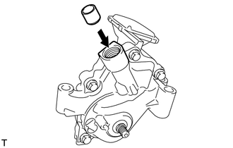
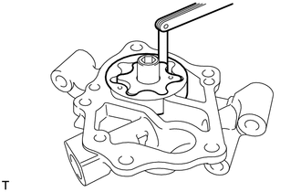
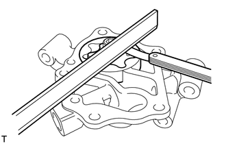
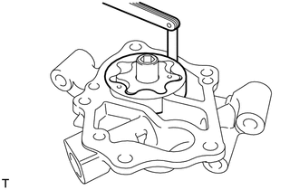

RM3140CG
_51
发动机/混合动力系统
_023955
1ZR-FE 润滑系统
_0116621
油泵
G
1ZR-FE 润滑系统 油泵 检查
程序

 1.检查机油泵减压阀
1.检查机油泵减压阀
a.

在机油泵减压阀上涂抹一层发动机机油，检查并确认该阀能依靠自身重量顺畅地滑入阀孔中。
如果机油泵减压阀不能顺畅滑入，则更换机油泵总成。
2.检查机油泵转子
a.
检查顶部间隙。
i.

使用测隙规，测量机油泵主动转子和机油泵从动转子的顶部间隙。
- 标准顶部间隙:
0.08 至 0.160 mm（0.00315 至 0.00630 in.）
- 最大顶部间隙:
0.35 mm (0.0138 in.)
如果顶部间隙大于最大值，则更换机油泵总成。
b.
检查侧隙。
i.

使用测隙规和精密直尺，测量机油泵主动转子、机油泵从动转子和精密直尺的间隙。
- 标准侧隙:
0.03 至 0.08 mm（0.00118 至 0.00315 in.）
- 最大侧隙:
0.16 mm (0.00630 in.)
如果侧隙大于最大值，则更换机油泵总成。
c.
检查泵体间隙。
i.

使用测隙规，测量机油泵从动转子和机油泵体间的间隙。
- 标准泵体间隙:
0.12 至 0.19 mm（0.00472 至 0.00748 in.）
- 最大泵体间隙:
0.325 mm (0.0128 in.)
如果泵体间隙大于最大值，则更换机油泵总成。